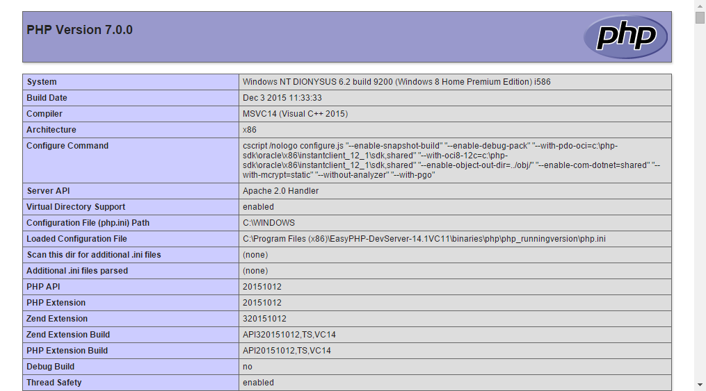
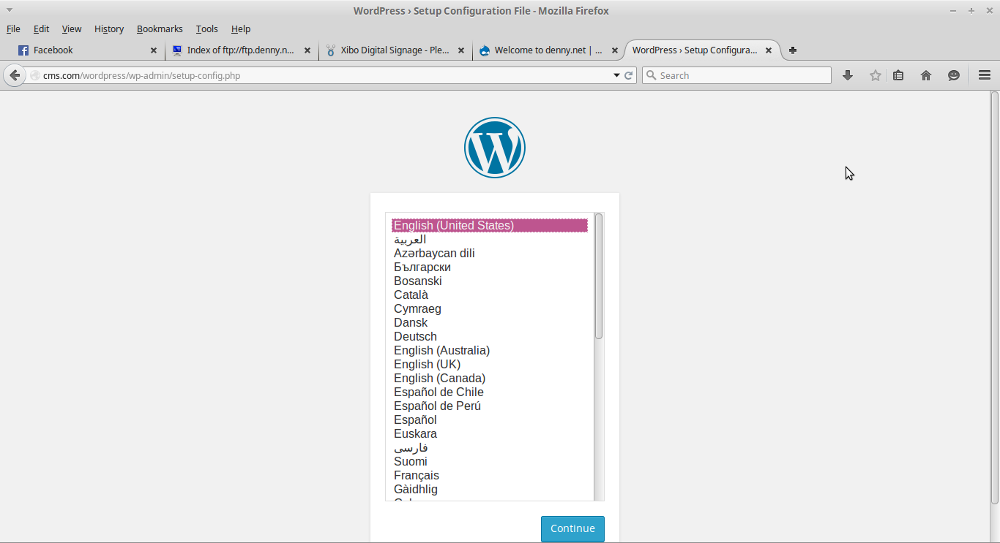

Pengertian SQL :
SQL atau biasa disebut Structured Query Language adalah sebagai suatu bahasa yang digunakan untuk mengakses suatu data dalam database relasional dan terstruktur sedangkan MySQL dalam hal ini menjadi software atau tools untuk mengelola atau memanajemen SQL dengan menggunakan Query atau Bahasa khusus. Pada dasarnya database yang dikelola dalam MySQL memang tidak jauh berbeda dari Microsoft Acces yakni berbentuk tabel – tabel yang berisi informasi tertentu. Perbedaannya terletak pada penggunaan serta pengelolaan database tersebut.
Fungsi MySQL :
untuk membuat dan mengelola suatu database secara terstruktur dan otomatis menggunakan suatu Bahasa khusus. Namun lebih jelasnya lagi MySQL ini memberikan kemudahan bagi para pengguna yang ingin mengelola suatu data yang berisi informasi secara String (text based) dan dapat diakses secara pribadi maupun untuk umum dalam suatu web. Hampir semua host atau penyedia server web memberikan fasilitas MySQL untuk para developer web yang menginginkan pengelolaan database di websitenya.
Tutorial Cara Menginstall WordPress 4.9 Pada Ubuntu 16.10 / 16.04 dan Linux Mint 18 Menggunakan LAMP Stack :
Step 1: Install Apache Web Server
$ sudo apt-get install apache2 apache2-utils
$ sudo systemctl enable apache2
$ sudo systemctl start apache2
Step 2: Install MySQL Database Server
$ sudo apt-get install mysql-client mysql-server
Jika pada masa instalasi paket anda diminta untuk memasukan password maka masukkan dengan password yang aman serta bagus dan lnjutkan dengan mengclick tombol 'OK'.
$ sudo mysql_secure_installation
Berikutnya anda akan diminta untuk melakuakn 'validate_password' maka ketik 'Y atau Yes'lalu Enter dan selanjutnya jika anda ingin mengganti password maka ketik 'Y atau Yes' dan jika tidak anda ketik 'N atau No'untuk perintah selanjutnya anda hanya perlu mengetikkan 'Y atau Yes'saja.
Jika anda mengalami error saat menginstall MySQL maka bukalah website berikut : https://linuxscriptshub.com
Step 3: Install PHP and Modules
$ sudo apt-get install php7.0 php7.0-mysql libapache2-mod-php7.0 php7.0-cli php7.0-cgi php7.0-gd
$ sudo vi /var/www/html/info.phpd
<?php
phpinfo();
?>
Jika kalian sudah membuatnya maka kalian bisa mengeceknya dibrowser dengan mengetikkkan localhost/info.php maka akan muncul seperti gambar berikut :
Step 4: Install WordPress CMS
$ wget -c http://wordpress.org/latest.tar.gz
$ tar -xzvf latest.tar.gz
$ sudo rsync -av wordpress/* /var/www/html/
$ sudo chown -R www-data:www-data /var/www/html/
$ sudo chmod -R 755 /var/www/html/
Step 5: Membuat WordPress Database
$ mysql -u root -p
mysql> CREATE DATABASE wp_Blogku;
mysql> GRANT ALL PRIVILEGES ON wp_Blogku.* TO 'your_username_here'@'localhost' IDENTIFIED BY 'your_chosen_password_here';
mysql> FLUSH PRIVILEGES;
mysql> EXIT;
// ** MySQL settings - You can get this info from your web host ** //
/** The name of the database for WordPress */
define('DB_NAME', 'database_name_here');
/** MySQL database username */
define('DB_USER', 'username_here');
/** MySQL database password */
define('DB_PASSWORD', 'password_here');
/** MySQL hostname */ define('DB_HOST', 'localhost'); /** Database Charset to use in creating database tables. */ define('DB_CHARSET', 'utf8'); /** The Database Collate type. Don't change this if in doubt. */ define('DB_COLLATE', '');
$ sudo systemctl restart apache2.service
$ sudo systemctl restart mysql.service
Oke jika semua proses sudah dilakukan mari kita cek di browser kita apakah sudah berjalan ataupun belum dengan mengetikkan "localhost" pada browser kita,jika muncul seperti gambar dibawah maka anda telah berhasil membuatnya.
Semoga berhasil mencoba kawan.jika terjadi error atau hal lain maka bisa chat dengan admin lewat medsos dibawah.